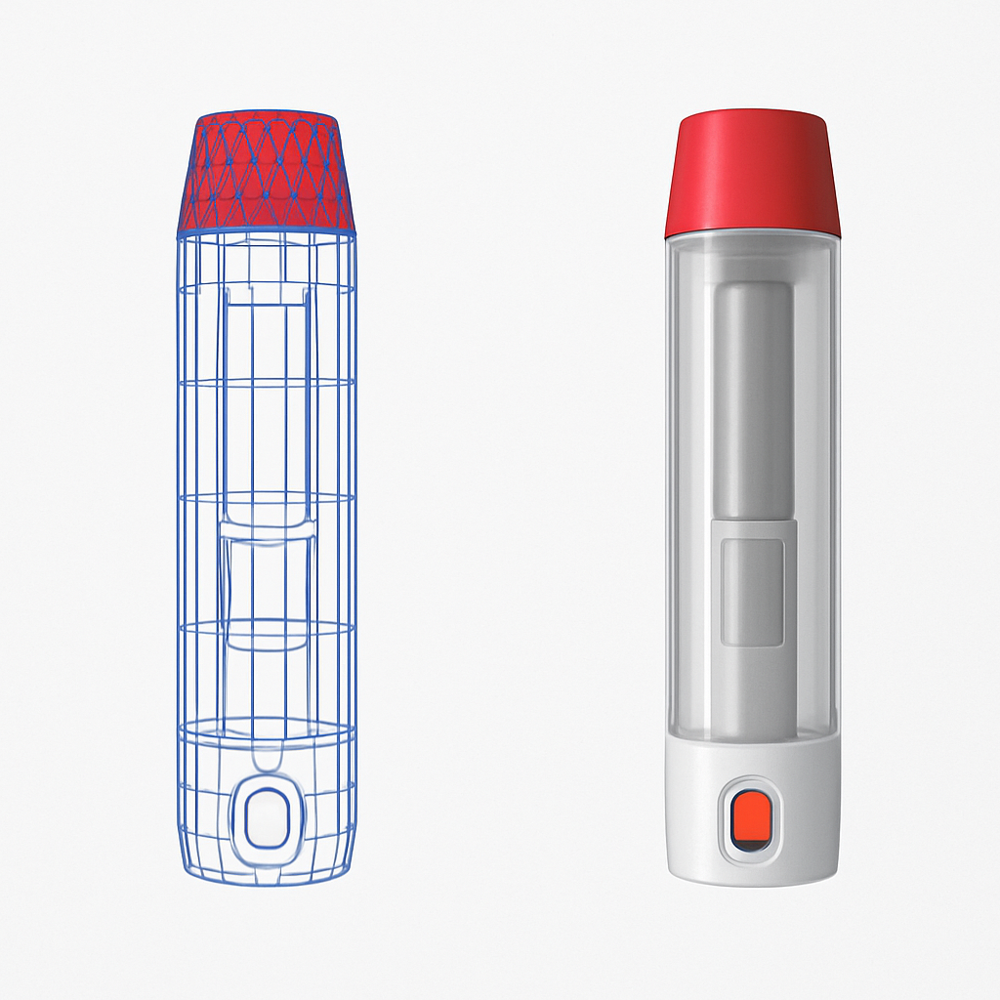

Digital Twin - Commercial Autoinjector
Internship Project

Contribution
Developed a digital twin of the company’s platform autoinjector to evaluate its reliability and performance. Using Python and advanced geometric modeling techniques, I created a convex hull representation of the device’s configuration space, enabling the team to better quantify operational robustness. I designed and executed a study on the critical degrees of freedom of the injector, programming Universal Test Systems for force analysis and conducting both thermal and mechanical testing to ensure compliance with ISO standards. Through statistical modeling and linear regression analysis, I identified the most significant potential failure risks, directly informing design improvements and risk mitigation strategies for the platform.
More Details
I programmed automated test sequences to capture high-resolution performance data and applied regression modeling to isolate factor sensitivities across varied operating conditions. This work required integrating data-driven approaches with rigorous mechanical validation. The process involved iteratively refining the digital twin with empirical results, which created a closed loop between simulation and testing. This not only improved accuracy in performance characterization but also established a scalable framework for evaluating next-generation autoinjector designs.